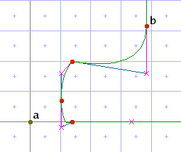

Vectors
A vector is a direction represented by a line. The TrueType engine stores a vector as an x,y coordinate pair--that is, as one end-point of a line. The other end-point of the line that defines a vector is always at coordinate 0,0. The actual location of the line is not so important, however, as the direction the line defines. Vectors stored by the TrueType engine determine how measurements are made and how points are moved.
The TrueType engine maintains three vectors:
- The freedom vector. Almost all the instructions that move points move them along (i.e. parallel to) the freedom vector (an important exception is <move-point-to-intersection>).
- The projection vector. Almost all instructions that measure distance (this includes almost all instructions that move points) do so along the projection vector.
- The dual projection vector. This is usually the same as the projection vector, but when it is different it is used by the <interpolate>, <measure-distance>, <mdrp> and <mirp> instructions--also by <move> when a "relative-to" point is present.
Most of the time the three vectors all point in the same direction, with the result that it is easy to visualize how instructions that move points work. For example, this code
<with-vectors axis="x">
<move distance="left-sidebearing">
<reference>
<point num="a"/>
</reference>
<point num="b"/>
</move>
</with-vectors>
moves point b along the horizontal freedom vector until it is positioned the rounded distance "left-sidebearing" from point a (the character origin at 0,0), as measured along the horizontal projection vector. When measuring the distance and moving the point, the TrueType engine treats both a and b as if they were arrayed in a single dimension, and the y axis did not exist. These images illustrate the effect of the move:
|  |
The freedom and projection vectors need not match. In the leftmost image below, the glyph program has moved point a, which defines the top of a serif, up to the nearest gridline. As a result point b is too close to a and ought to be moved up by the same amount. But moving it straight up would alter the slope of the diagonal line whose bottom point it defines. The solution is to set the freedom vector to be parallel to the diagonal so that point b moves along that line without distorting it. This code will do it:
<with-projection-vector axis="y">
<with-freedom-vector to-line="parallel">
<line>
<point num="b"/>
<point num="c"/>
</line>
<shift>
<reference>
<point num="a"/>
</reference>
<point num="b"/>
</shift>
</with-freedom-vector>
</with-projection-vector>
The middle image shows the result of the move, and the last image shows the same area of the glyph after execution of <interpolate-untouched-points>.
Notice how the curve that joins the diagonal to the serif is preserved even at 16 pixels-per-em. An anti-aliasing program can give an impression of this curve, as in the image below, which is enlarged 8x.
A vector has a direction, though this is rarely significant. When the vector is set to the y axis, it points up; when set to the x axis, it points right. When set to a line, it points from the second point in the <line> element to the first: imagine an arrow on the first point.
Instructions that set vectors
Instructions that begin with set set one or two vectors, and these remain as set until another vector-setting instruction is encountered. Instructions that begin with with set vectors that apply only to the instructions contained within the with element.
Instructions that set the projection vector, freedom vector, or both may do so in any of four ways:
- by including an axis attribute whose value is x or y.
- by including a <line> element as the child of a set instruction or the first child of a with instruction. You may also include the to-line attribute on the set or with element to indicate whether the vector should be parallel or orthogonal to the line (the default is parallel).
- by including the attributes x-component and y-component, giving the x and y components of the point that defines the vector. The sum of the squares of these numbers must be 1v (or 16384 if integers are used). It would be difficult to calculate these coordinates on the fly, so this method is chiefly useful for restoring saved vectors.
- by doing none of these things, in which case a set instruction attempts to retrieve the required vector(s) from the stack while a with element only saves the current vector(s), executes the instructions it contains, and then restores the vector(s).
<set-vectors>
<with-vectors>
Sets both the projection vector and the freedom vector to the same value. They can be set to "x" or "y" via the axis attribute; to a line by including a line element as the content of the <set-vectors> element or the first child of the <with-vectors> element; or by passing "raw" values via the x-component and y-component attributes.
Xgridfit looks first for an axis attribute, next for a <line>, and finally for x-component and y-component attributes (neither is used unless both are present). If it finds none of these, Xgridfit prints a warning and attempts to find the values it needs on the stack.
The "raw" values passed in via x-component and y-component are constrained in ways that make them difficult to calculate, at least in a TrueType program, but the x-component/y-component method is useful to restore values that have been saved via <store-projection-vector> or <store-freedom-vector>. For example, to copy one vector to another, you can do this:
<variable name="x-comp"/> <variable name="y-comp"/> <store-freedom-vector x-component="x-comp" y-component="y-comp"/> <set-projection-vector x-component="x-comp" y-component="y-comp"/>
But because of the way these instructions can leave values on the stack and take them from the stack again, this is easier and more efficient:
<store-freedom-vector/> <set-projection-vector/>
When setting vectors to a line, one or both points in the line can be in the twilight zone. You can include a zone attribute in the <line> element or one in either or both <point> elements. Include a zone attribute in the <line> element if both points are in the twilight zone. This is the same as including an attribute zone="twilight" in both points. If only one point is in the twilight zone, include the zone attribute for that point.
Attributes
- axis
- The axis to which the vectors should be set. Permitted values are x and y.
- to-line
- Whether the vectors should be parallel or orthogonal (perpendicular) to the line being used to set the vector. The default value is parallel.
- x-component
- The x component of the vector to set. This has no effect unless the y-component attribute is included as well.
- y-component
- The y component of the vector to set. This has no effect unless the x-component attribute is included as well.
<set-projection-vector>
<with-projection-vector>
Just like <set-vectors>, but sets only the projection vector.
<set-freedom-vector>
<with-freedom-vector>
Just like <set-vectors>, but sets only the freedom vector.
<set-dual-projection-vector>
Like <set-projection-vector>, but the dual projection vector can be set only from a line, and it uses the original positions in the outline of the points that constitute the line rather than their current positions (assuming they have moved).
The dual projection vector is not used by every instruction: just by <interpolate>, <get-coordinate>, <measure-distance>, <mirp>, <mdrp>, and <move> (only when a "relative-to" point is present). This vector lasts only until a new projection vector is set; then it gets canceled.
One or both points in the line may be in the twilight zone. See the explanation for <set-vectors>.
Instructions that store vectors
<store-projection-vector>
<store-freedom-vector>
These instructions store a vector as two numbers, an x-component and a y-component. The x-component and y-component attributes, if given, must be identifiers for variables:
<store-projection-vector x-component="vx" y-component="vy"/>
If variables are not given, a warning is printed and the values are left on the stack, where they will be picked up correctly by a following set instruction. For example, this code sets the projection vector to be the same as the freedom vector:
<store-freedom-vector/> <set-projection-vector/>
Note that a with block will not pick up the components of a vector from the stack.
Attributes
- x-component
- The x-component of the vector. Both the x-component and the y-component must be present if either is present; otherwise the one that is present is ignored, and the two components of the vector are left on the stack.
- y-component
- The y-component of the vector.